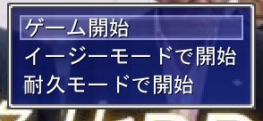

最新情報
- 2022/03/07
- 先行版1.9公開 HPが下に下がる不具合を修正！NEW
- 2022/03/03
- 先行版1.8公開NEW詳細はこちら
- 2022/03/03
- 先行版1.7公開NEW
- 2022/03/03
- 先行版1.6公開NEW
- 2022/03/02
- プレイ数が50突破！祝
- 2022/02/28
- 先行版1.5公開
- 2022/02/27
- 公式サイト作成
- 2022/02/27
- 先行版1.4公開
- 2022/02/27
- 先行版1.3公開
- 2022/02/26
- 先行版1.2公開
- 2022/02/26
- 先行版1.1公開
- 2022/02/26
- 先行版1.0公開
- 2022/02/17
- ゲーム作成作業開始
GAME
ゲームについて
| ジャンル | RPG |
|---|---|
| 作成 | 暴言BOT・授業さぼりHUB・隆也RPG作成チーム |
| 対象年齢 | 全年齢 |
| 動作環境 | Plicy（オンライン）で動作します。通信環境の良いところでのプレイを推奨 |
| プレイ方法 | パスワードを知ってる方はこちらから ご存じでない場合はここからプレーヤー登録をしてください。プレーヤー数が30を超えたら一度終了します。 先行版から完全版に切り替える際にパスワードを変更します |
| 問い合わせ先 | 基本的にはbougenbot2nd@protonmail.com又は暴言BOT公式TwitterにDM |
| 学校内プレイ | 不可（フィルターかかる） |
| ゲーム内容 | 戦う。以上！ |
注意事項等
拡散・共有
チクり魔以外なら問題ないですが、こちらからユーザー登録してください。
難易度
ノーマルモードは推奨難易度です。レベル5からスタートしゲーム開始時に少しアイテムを持った状態でスタートします。
イージーモードで開始するとレベル10から開始できます。ノーマルと比べて1.5倍ぐらい強いです。またアイテムがノーマルより少し多くもらえます。
耐久モードは開始時にアイテムをもらえず、戦闘中にアイテムを使用できません。結構鬼畜なので自信がある方は是非！
バグやエラーについて
問い合わせてください💛そのうち掲示板とか出します。
Contact
お問い合わせは以下までお願い致します。
bougenbot2nd@protonmail.com
or
@bougenbot2nd
最新情報を受け取る場合はこちら